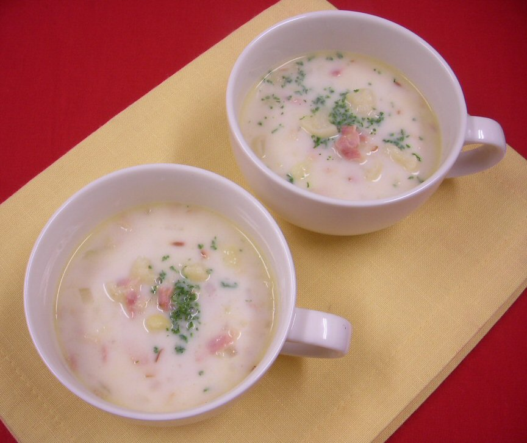

ベーコンとカリフラワーのクリームスープ

材料（2人分）
- 朝のフレッシュハーフベーコン４連 ... 1パック
- カリフラワー ... 100g
- 玉ねぎ ... 1/4個
- パセリのみじん切り ... 少々
- バター ... 10g
- 水... 300ml
- 固形コンソメ ... 1/2個
- 牛乳 ... 100ml
- 塩 ... 少々
- こしょう ... 少々
作り方（調理時間:15分/目安）
- 朝のフレッシュハーフベーコンは細切りにする。
- カリフラワーは小さめに切り、玉ねぎはみじん切りにする。
- 鍋にバターを熱して①と②を炒め、水と固形コンソメを加えて弱火でしばらく煮込む。
- ③に牛乳を加え、塩、こしょうで調味する。
- 器に注ぎ、パセリのみじん切りを散らす。
提供
伊藤ハム米久ホールディングス（株）